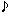

Getting Started
Using Sneer with others is more fun. Call a friend to try it out with you.
» Downloading
-
This will download Sneer source code, documentation and launch Sneer. You can access the documentation from within the Sneer main menu.
Sneer runs on Java 6. It does NOT run on Java 7 yet.
Automatic installation:
or
Manual installation: Sneer (requires Java 6 Webstart).
You will be prompted for a secret passphrase. It should be more than 30 characters long and unique to you, for example: your childhood phone number followed by a verse from your favorite song.

Congratulations, you now have a sovereign seal! You can publish it so that other people can connect to you securely.
Enter your name in the "Own Info" screen that will appear and you're done.
» Adding a Friend
-
Go to the My Contacts menu and click on New Contact...

Right-click on the new contact › Edit Contact.
Enter any nickname for your friend and paste his/her seal.
Your friend will have to do the same thing for you on his side.
Either you or your friend (or both) will have to fill in the host and port fields for the other person. You can find out your host IP address here. You can find out your seal and port number in the "Main Menu › Own Info" screen.
Close the "Contact Info" window.
When a green light beside your friend's nickname appears it means that you're connected! If you cannot get a connection, find a sovereign friend to help you forward your port on your router.
» Surprise MP3 Sharing with "No Way" Technology 
-
Want to share songs you and your friends wrote? You guys have cool tracks that are public domain?
Sneer will download random tracks from your friends to surprise you.
Using "No Way" technology, Sneer will actually learn about your musical taste. The more friends you have and the more you download tracks, the better your downloads will become.
Click on Menu › Music to open the player.
Choose your root music folder.

OK! Now you have a drop-down list with all sub-folders and one ‹Inbox› option. It's your tracks inbox and the counter will increase as soon as you receive your friends tracks.

To listen to your tracks just choose a folder and Music will start playing automatically

Great! You're listen to your musics but before start sharing let Sneer map them all. It can take a while, will depends how many tracks you have in your root folder chose previously.
To monitor this mapping task and other tasks you can check the Sneer Log Console in Menu › Open Log Console

The screen above will show up informing you all the Sneer activities

Mapping task done, you just need to wait your friends music tracks be dowloaded. If you want to follow the progress of your downloads go to Menu › Downloads...

» Uninstalling
-
To uninstall, simply delete the folder named sneer in your home folder.